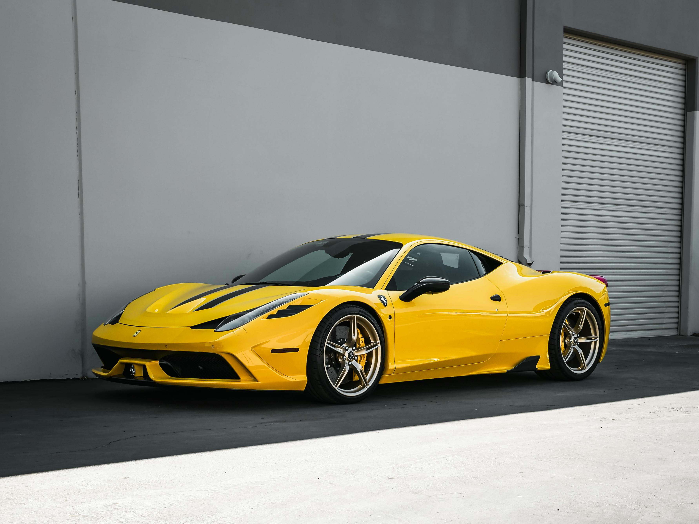
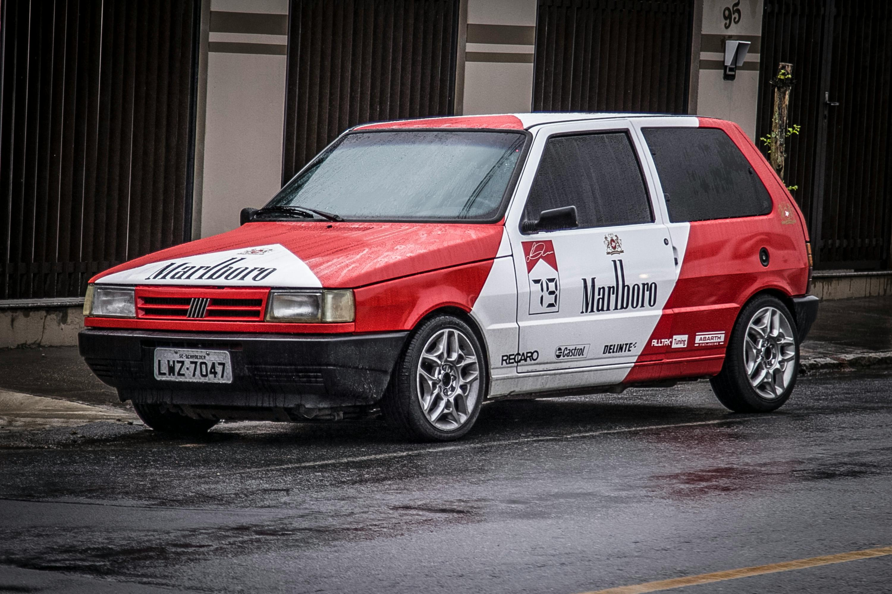
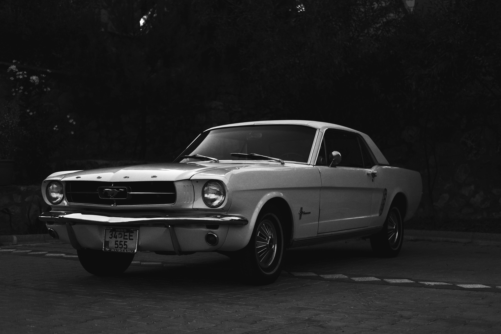
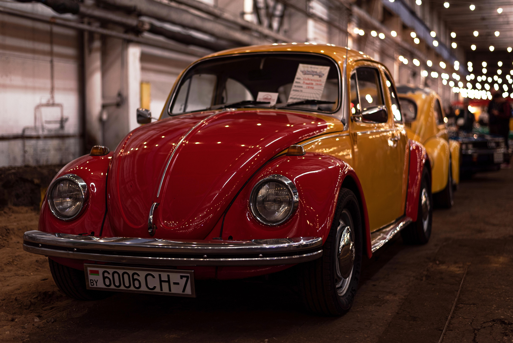
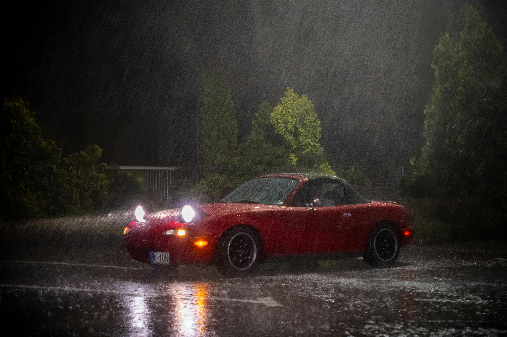
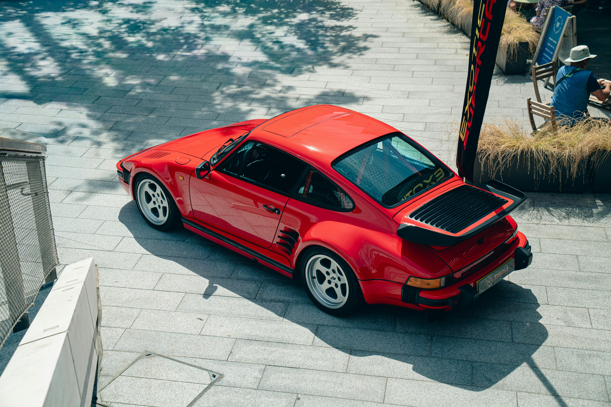

Ferrari 458 Speciale

especificações
Ano de lançamento: 2013,
Motor: V8 4,5 L naturalmente aspirado,
Potência máxima: 605 cv a 9 000 rpm,
Velocidade máxima: acima de 325 km/h,
Aceleração 0 a 100 km/h: 3,0 s.
Valor no mercado: R$ 3.045.387,00
Fiat UNO

especificações
Motor: 1.0 Fire Flex (gasolina ou etanol),
Potência: cerca de 73 cv (gasolina),
Torque: ~9,5 kgfm,
Câmbio: manual de 5 marchas,
Velocidade máxima: ~150 km/h,
0 a 100 km/h: cerca de 14 a 15 s.
Valor no mercado: do ano de 1990 a 2000: R$ 7.000 a 15.000
Ford Galaxy

especificações
Motor: 2.0 turbo diesel,
Potência: cerca de 163 cv,
Velocidade máxima: até ~217 km/h (versão V6),
0 a 100 km/h: cerca de 9,9 a 13 s dependendo da versão.
Valor no mercado: Modelos de 1998 a 2005: ~R$ 15.000 a 35.000
Beatle

especificações
Tipo: motor boxer 4 cilindros,
Posição: traseiro,
Arrefecimento: a ar (sem radiador)Velocidade máxima: 125 a 140 km/h (dependendo da versão)
0 a 100 km/h: cerca de 18 a 22 segundos.
Valor no mercado: Fusca restaurado: R$ 30.000 a R$ 60.000
mazda miata

especificações
Tipo: 4 cilindros em linha,
1.8L: ~131 cv,
Manual de 5 marchas (alguns automáticos de 4)
Tração
Traseira (RWD),
0 a 100 km/h: ~8,5 segundos
Velocidade máxima: ~195 km/h.
Valor no mercado: Usado: R$ 70.000 a R$ 150.000 dependendo do estado
Porsche 911 Turbo (930)

especificações
Tipo: 6 cilindros boxer (motor oposto),
Posição: traseiro,
Turboalimentado,
3.3 Turbo: ~300 cv,
0 a 100 km/h: ~5,0 segundos,
Velocidade máxima: ~260 km/h.
Valor no mercado: R$ 800.000 até mais de R$ 1.500.000